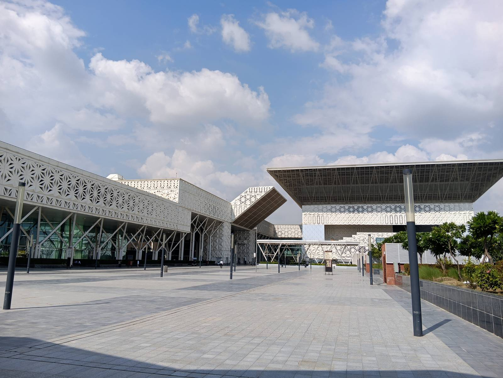
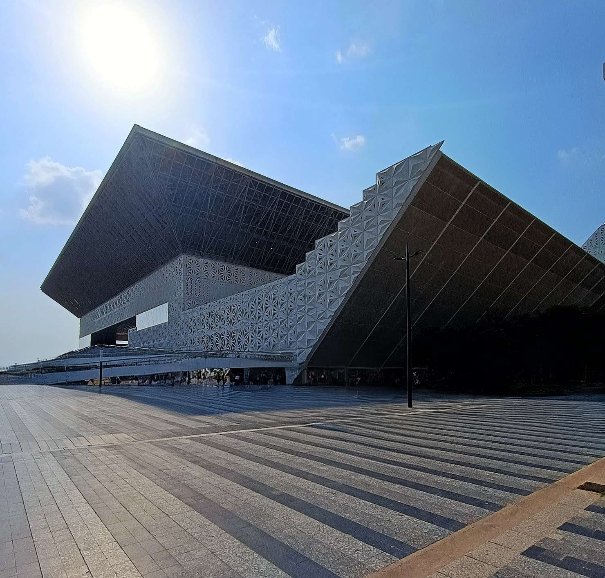

Venue · Convention centre
Yashobhoomi (India International Convention and Expo Centre)
- Type
- Convention centre
- Location
- New Delhi, India
- Address
- Dwarka, New Delhi, India
- Exhibition space
- 60,000 m²
- Halls
- Official exhibition-halls page: Phase-1 (Halls 1 and 2) provides an indoor exhibition area of over 60,000 m². Official hall tables: Hall 1 total 27,060 sqm (1A 5,200; 1B 8,000; 1C 8,000; 1D 5,860); Hall 2 gross 23,880 sqm (2A 5,860; 2B 6,080; 2C 6,080; 2D 5,860). Phase-2, when complete, is officially described as five halls providing over 240,000 m² of built-up space plus open exhibition areas, and is not used as the current headline.
- Official website
- https://www.iiccnewdelhi.com/
About
India International Convention and Expo Centre at Dwarka, operated by KINEXIN. exhibition_sqm follows the official Phase-1 wording of over 60,000 m² indoor exhibition area now that Halls 1 and 2 are available (Phase-1 completion dated 1 October 2023 on the official page). The official hall-table sum for Halls 1 and 2 is 27,060 + 23,880 = 50,940 sqm, so the 60,000 figure may include foyers or circulation not itemised in those tables; both official figures are kept and not averaged. Official Phase-2 totals are future and unused. Public email on the official page is. The atlas pin for India Mobile Congress 2027 is not marked precise, so coordinates are left null pending a precise named Nominatim pin.
Spaces
| Name | Type | Capacity | Area |
|---|---|---|---|
| Exhibition Hall 1 | — | — | 27,060 m² |
| Exhibition Hall 2 | — | — | 23,880 m² |
Upcoming events
Sources
- Official source — https://www.iiccnewdelhi.com/exhibition-halls